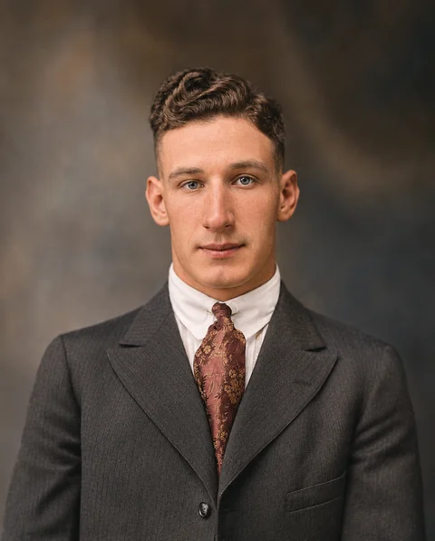
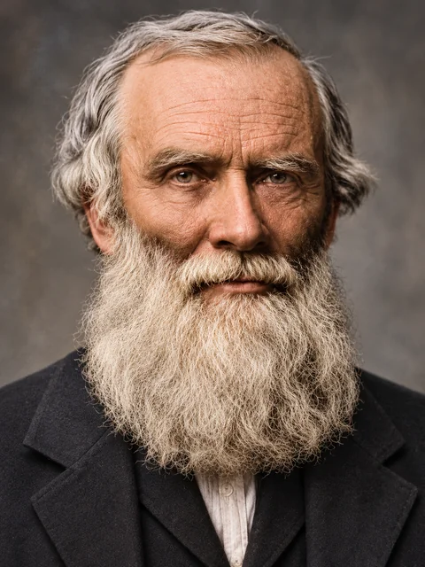
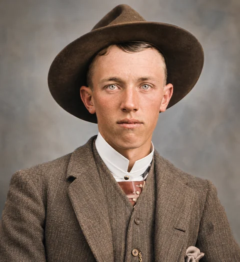
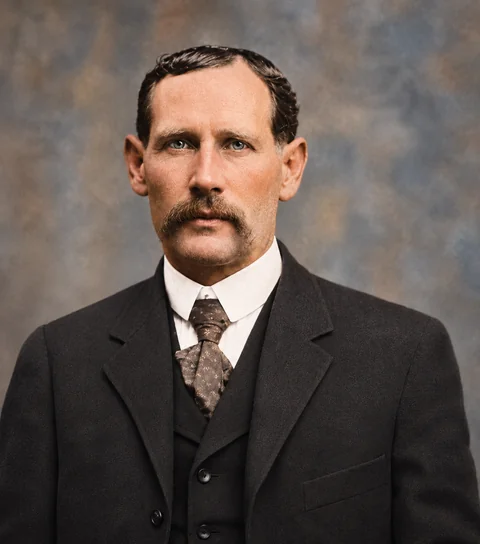
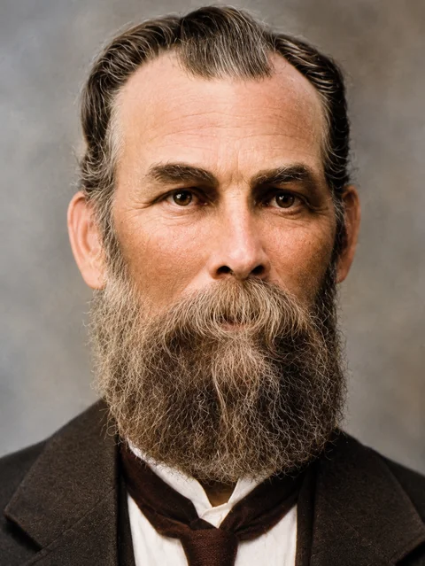
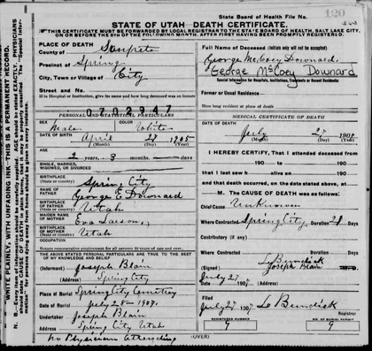
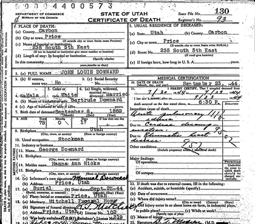
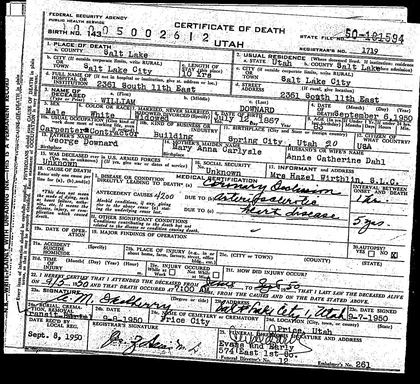
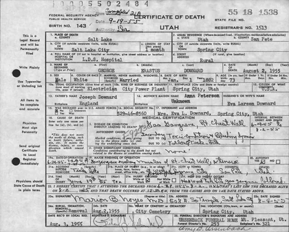
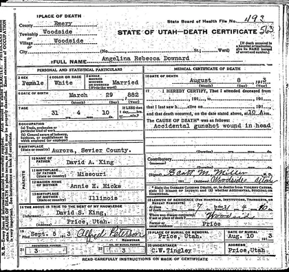

The family archive
Image Library
Browse family photographs and historical document scans. Open any image to see the full detail.
Family photographs


Glenn Cody Lambson
Glenn Cody Lambson · Colorized historical photograph supplied by the family


George Downard
George Downard · Colorized historical photograph


John Louis Downard
John Louis Downard · Colorized historical photograph


Arba Lorenzo Lambson Jr.
Arba Lorenzo Lambson Jr. · Colorized historical photograph supplied by the family


George Freestone
George Freestone · Colorized historical photograph

Clyde Thomas Freestone
Clyde Thomas “Tom” Freestone · Colorized historical photograph
Document scans

Death record associated with George Downard
Original scan preserved in the Downard story. Confirm record identifiers against the image.

Death certificate associated with John Louis Downard
Original scan preserved in the Downard story.

Death record associated with Walter William Downard
Original scan preserved in the Downard story.

Archival record requiring identification
Original scan preserved in the Downard story. The subject has not been established.

Archival death record associated with the Downard family
Original scan preserved in the Downard story. The association is an archive label.